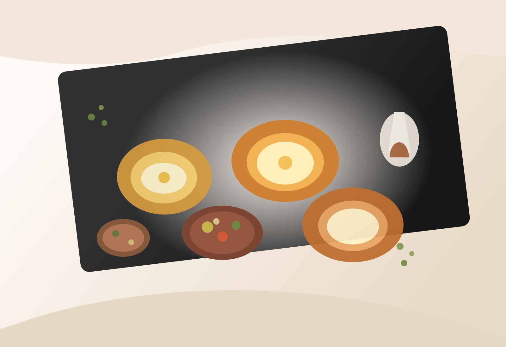
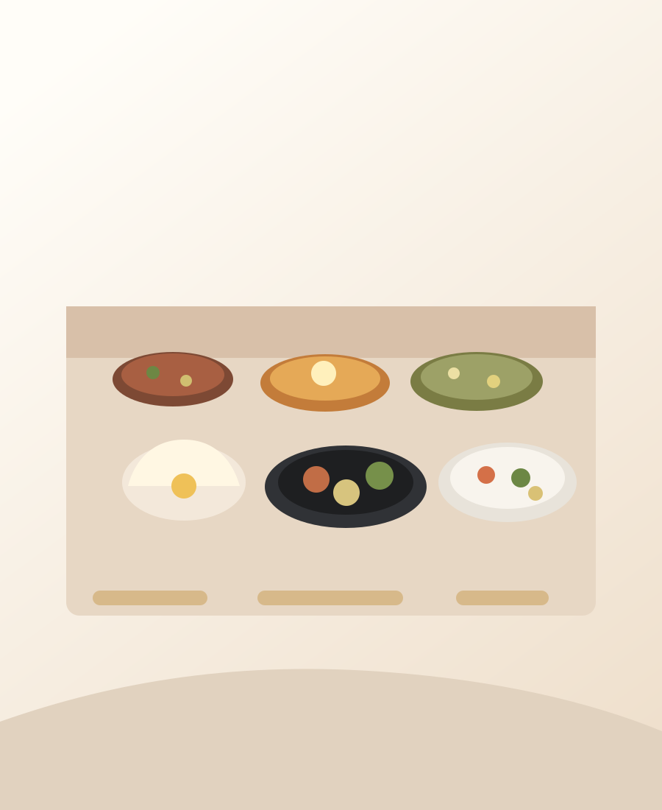
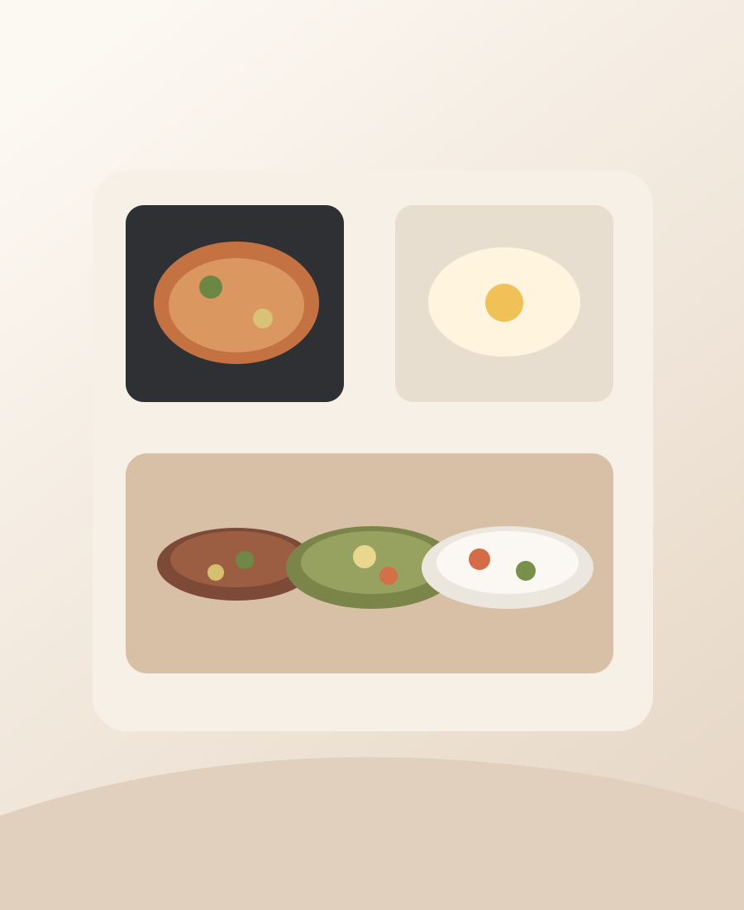

Depuis Paris
Traiteur géorgien pour événements privés et professionnels.
Nous sommes un service de traiteur basé à Paris, spécialisé dans la cuisine géorgienne authentique. Nous accompagnons les anniversaires, célébrations, réceptions et buffets d'entreprise avec une approche souple, élégante et généreuse.
Nous contacter
Un échange simple pour organiser votre réception.
Traiteur géorgien à Paris pour les particuliers et les entreprises. Nous adaptons le format, le volume et le service à votre événement.
Téléphone : 06 12 34 56 78
Livraison, mise en place, service ou cuisine sur place.
Quelques moments
Exemples de notre travail


Livraison & buffet
Mise en place soignée pour une réception fluide et sans contrainte.
Service sur événement
Présence discrète et chaleureuse pour accompagner les invités.
Cuisine sur place
Préparation à la minute quand le format de l'événement le demande.
Questions fréquentes
Des réponses claires avant votre réservation.
Nous intervenons pour les anniversaires, soirées privées, réceptions, événements festifs, déjeuners d'équipe, cocktails et buffets d'entreprise.
Oui. Nous proposons la livraison avec mise en place, la mise en place avec service, ainsi que des prestations de cuisine sur place selon les contraintes du lieu.
Chaque devis dépend du nombre de convives, du format souhaité, du menu choisi, du niveau de service et de la logistique sur le lieu de l'événement.
Nous conseillons de nous contacter le plus tôt possible pour les dates très demandées. Pour un événement proche, écrivez-nous ou appelez-nous afin de vérifier la disponibilité.